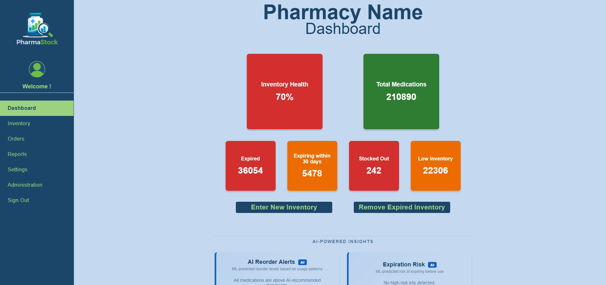
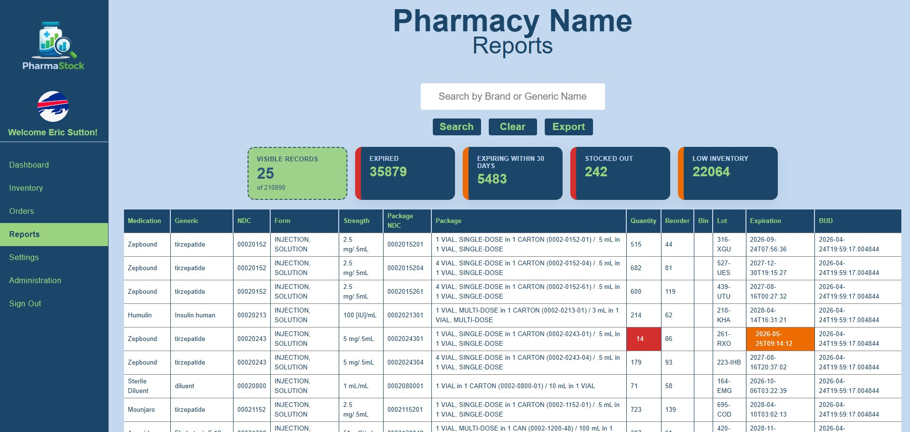
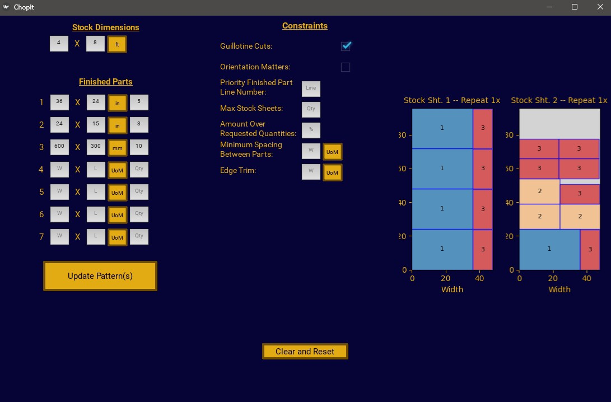
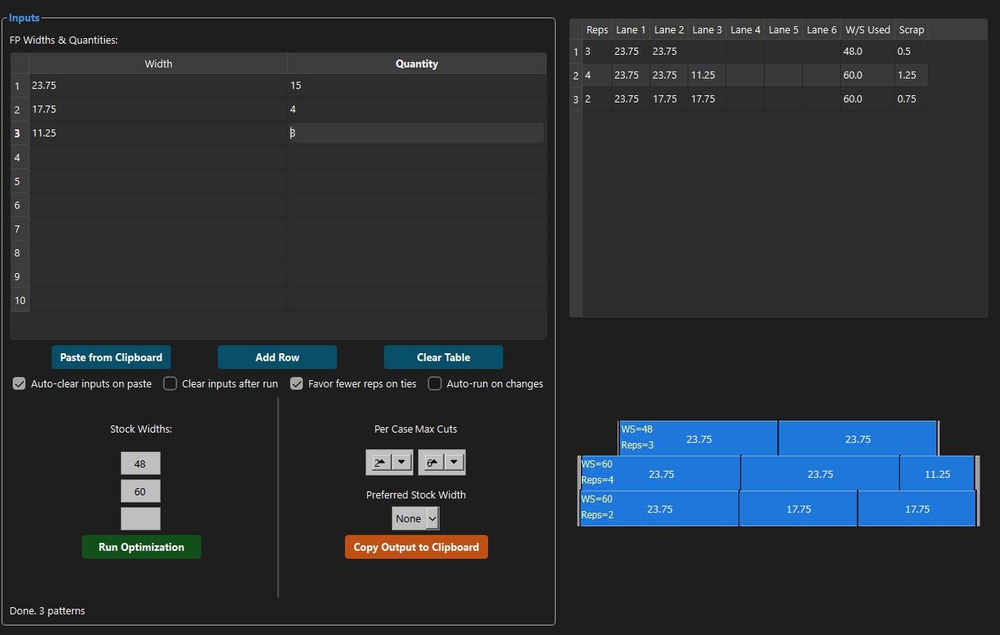
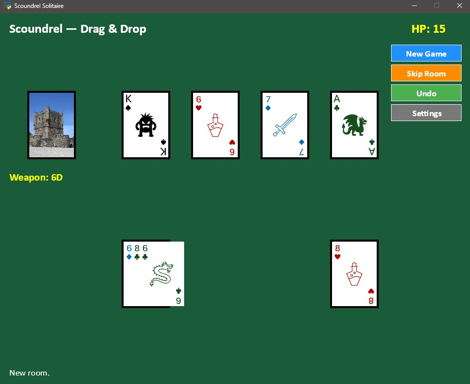
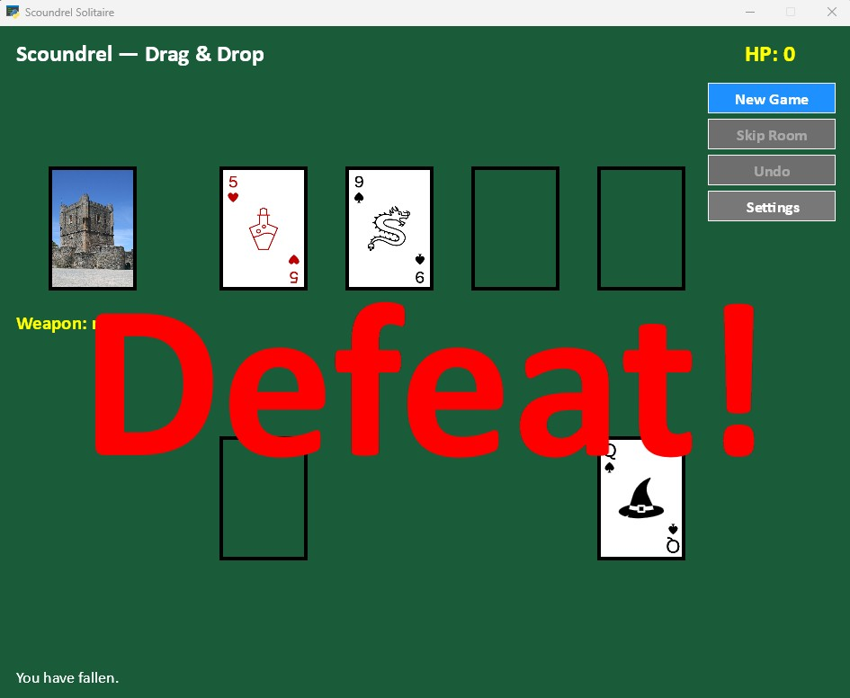
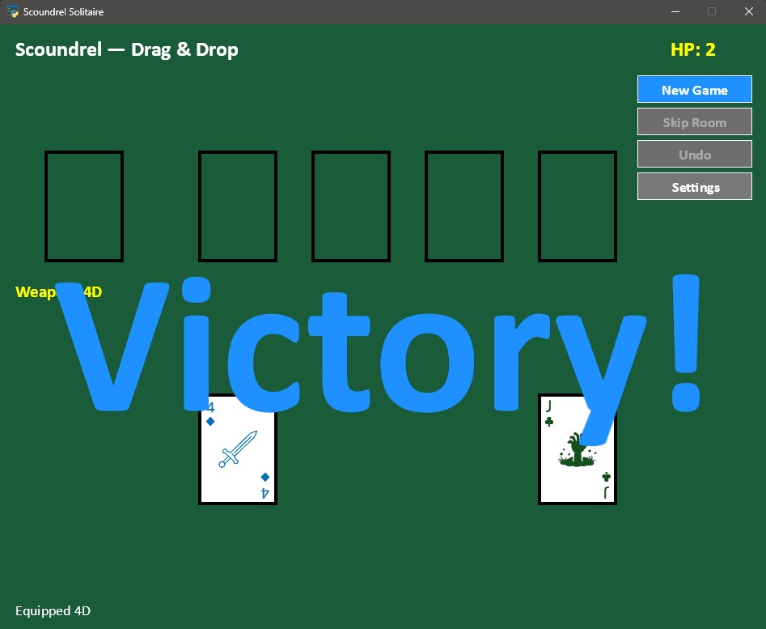
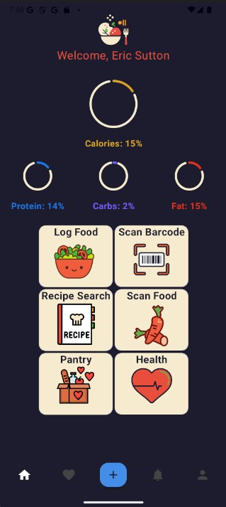
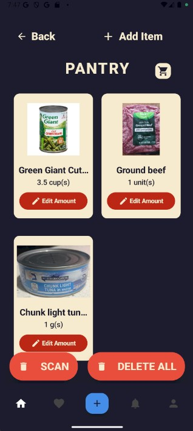

I build practical software solutions that help businesses work smarter, streamline operations, and make better decisions.
After 15+ years in manufacturing and supply chain operations, I returned to school to pursue Computer Science and combine real-world operational experience with software development. Today, I specialize in building tools that improve efficiency, organization, and decision-making for small businesses and operations teams.
Thanks for dropping by, I’m Eric Sutton. My journey has been an interesting one. It only took me 20 years after graduating high school to figure out what I wanted to do with my life, which is why you’re now here, checking out my portfolio. I have a diverse selection of skills and experiences that make me the perfect fit for helping your business improve.
After a failed initial attempt at college right after high school, I started my career as a general operator at a manufacturing facility for a Fortune 500 company. I technically didn’t even work for the company, initially, I was a contractor running material handling equipment (fork trucks, in particular). Once I was hired by said company, I spent the next 12 years manufacturing components for electronic components. Yes, that’s correct, we made the parts that are used to make the parts to make electronics.
From there, I moved into the supply chain side of things, scheduling the very machines I used to work on. Since 2022, I’ve ridden the waves of supply and demand, sometimes feeling like those waves were crushing, others like I was the king of the world (cue Celine). I’ve earned my CPIM (Certification in Planning and Inventory Management) from APICS and decided that a single course wasn’t enough torture, so I returned to college to pursue a degree in Computer Science.
And now, you’ve come to my little corner of the interwebs to see some of the fruits of my labor.
My grandfather was one of the most influential men in my life. He spent most of his life creating businesses to address needs in the community around him. From spreading joy and laughter as a clown and magician to repairing bicycles to providing delicious sustenance with road-side BBQ and a catering business, he showed me the importance of having passion, knowledge, and the guts to pursue your dreams.
I also had the privilege of seeing, first-hand, the difficulties and stresses of running your own business, which is something I want to help alleviate. My desire is to create custom software solutions to help make the life of a small business owner just a little bit easier.
I’ll leave you with a quote from the greatest quarterback of all time (Josh Allen): “Do good, be good, God bless, and Go Bills!”


Built with Angular, TypeScript, HTML/CSS, and .NET, PharmaStock is a full-stack inventory management application designed to help local pharmacies track inventory, expiration dates, and stock levels more efficiently.

Built with Python, ChopIt is a 2D cutting stock optimizer designed to reduce material waste and improve cutting efficiency for manufacturing and fabrication workflows. The application calculates optimized cutting layouts based on user-defined dimensions and material constraints.

PatternOptimizer is a Python application that solves 1D cutting stock problems by generating efficient cut patterns to minimize scrap and maximize material usage. The project focuses on mathematical optimization and production-planning concepts commonly used in manufacturing environments.



Scoundrel is a digital adaptation of the solitaire-style dungeon card game built with Python. The project focuses on game-state management, turn-based logic, and interactive gameplay systems.


Built with Kotlin for Android, Chompr is a mobile nutrition and meal-planning application designed to help users track calories, monitor macronutrients, and organize meals more efficiently.
The app includes barcode scanning, meal planning tools, shopping list generation, and Firebase integration for authentication and cloud-based data storage.
Managed production scheduling, inventory planning, and operational workflows in a high-demand manufacturing environment.
Worked in high-volume manufacturing operations, producing precision components for the electronics industry.
Returned to college to pursue Computer Science with a focus on software development, business systems, and operational problem solving.
Web and desktop applications designed to streamline workflows, improve organization, and automate repetitive tasks.
Solutions focused on inventory tracking, reporting, production planning, and operational visibility.
Dashboards, reporting systems, and analytics tools using SQL, Power BI, and custom APIs.
Software-driven solutions that reduce waste, improve efficiency, and support smarter operational decision making.